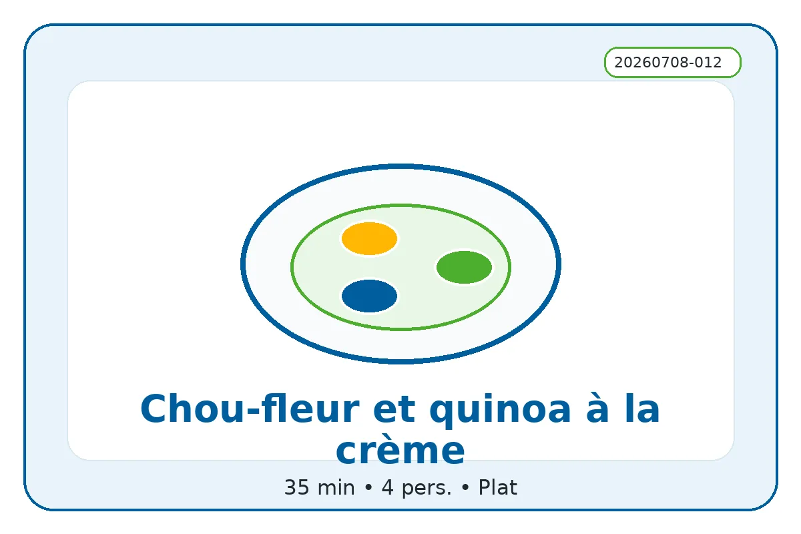

ID recette : 20260708-012
Chou-fleur et quinoa à la crème
Un plat complet chou-fleur, quinoa et crème, doux et nourrissant, qui associe légumes, céréale et sauce crémeuse.
Le chou-fleur doit être précuit pour rester fondant, tandis que le quinoa apporte de la tenue. La crème lie l’ensemble et peut être remplacée par une crème végétale.

🧭 Repères alimentaires
Repères indicatifs à vérifier selon les marques, les remplacements d’ingrédients et les produits réellement utilisés.
🔥 Cuisson indicative
Casserole/vapeur : 8 à 10 min pour le chou-fleur ; quinoa 12 à 15 min. Option gratin : 200 °C pendant 10 min.
Option gratin : 200 °C — 10 min.
Ces valeurs sont indicatives : ajuster selon le four, l’épaisseur du plat et la coloration souhaitée.
⚖️ Adapter les quantités
Le calcul adapte les quantités proportionnellement. Les valeurs nutritionnelles restent calculées sur les quantités de base.
🧺 Ingrédients avec quantités
Principaux
- 700 g — chou-fleur
- 220 g — quinoa
Secondaires
- 200 ml — crème
- 1 pièce — ail ou oignon
- 450 ml — eau ou bouillon
Optionnels
- 80 g — fromage
- 1 c. à café — épices douces
- 30 g — chapelure
👩🍳 Préparation détaillée
- Rincer le quinoa. Le cuire dans deux fois son volume d’eau salée jusqu’à absorption, puis l’égoutter si besoin.
- Détailler le chou-fleur en petits bouquets et les cuire à l’eau ou à la vapeur 8 à 10 minutes, jusqu’à ce qu’ils soient tendres mais encore fermes.
- Faire revenir l’ail ou l’oignon dans une poêle avec un peu d’huile. Ajouter le chou-fleur et le quinoa.
- Verser la crème, poivrer et ajouter un peu de fromage ou d’herbes si disponible.
- Laisser chauffer 3 à 5 minutes à feu doux. Servir tel quel ou gratiner quelques minutes au four.
💡 Astuce anti-gaspi
Les restes de chou-fleur cuit sont parfaits. Si le plat semble trop épais, détendre avec un peu d’eau de cuisson ou de lait.
🔁 Variantes possibles
Ajouter comté, chapelure, persil, curry, œuf dur, pois chiches, poulet, restes de légumes ou crème végétale. Pour une version gratinée, passer 10 minutes au four avec fromage et chapelure.
🔎 Rechercher cette recette sur Google
🔗 Sources d’inspiration
Liens utilisés pour comparer les techniques, les variantes et les temps de préparation. La fiche reste reformulée et adaptée au projet.
📊 Valeurs nutritionnelles estimées
Estimation indicative. Les valeurs ci-dessous sont calculées à partir d’ingrédients génériques et des quantités de base. Elles ne remplacent pas les étiquettes des produits, ni un avis médical ou diététique. Voir l’explication complète.
Non officiel
| Valeur | Par portion | Pour 100 g |
|---|---|---|
| Énergie | 2120 kJ / 506.6 kcal | 475 kJ / 113.5 kcal |
| Protéines | 19.3 g | 4.3 g |
| Glucides | 48.7 g | 10.9 g |
| dont sucres | 7.7 g | 1.7 g |
| Lipides | 25.1 g | 5.6 g |
| dont acides gras saturés | 13.9 g | 3.1 g |
| Fibres | 9.2 g | 2.1 g |
| Sel | 0.6 g | 0.1 g |
Portion estimée : 446 g. Score simplifié : -1. Indicateur estimé non officiel. Il ne correspond pas à un calcul réglementaire ni à un Nutri-Score officiel.
⚠️ Allergènes et conservation
Allergènes : Lait
Conservation : À conserver 24 h au réfrigérateur dans une boîte fermée.
Réchauffage : À réchauffer doucement si nécessaire.
Vérifiez toujours les étiquettes des produits utilisés.
🔎 Filtres associés
Cliquez sur un bouton pour trouver les recettes associées au même champ.
Sous-catégorie : Plat cremeux
Moment du repas : Dejeuner Diner
Équipement : Casserole
Allergènes : Lait
Repères alimentaires : Sans porc Végétarien Sans gluten possible Contient lait
📱 QR code
QR code vers la fiche en ligne.
https://recettesducoeur.github.io/recettes/20260708-012.html
Sur mobile/tablette, seul le téléchargement PDF est proposé. Sur PC, l’impression conserve les quantités sélectionnées.